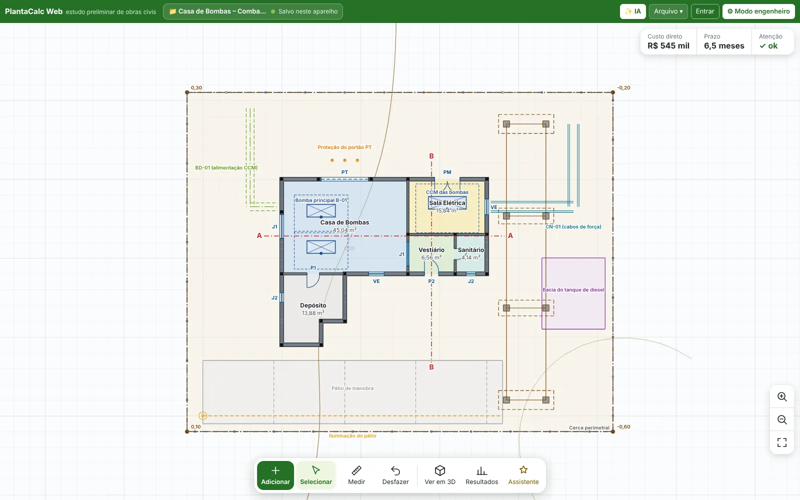
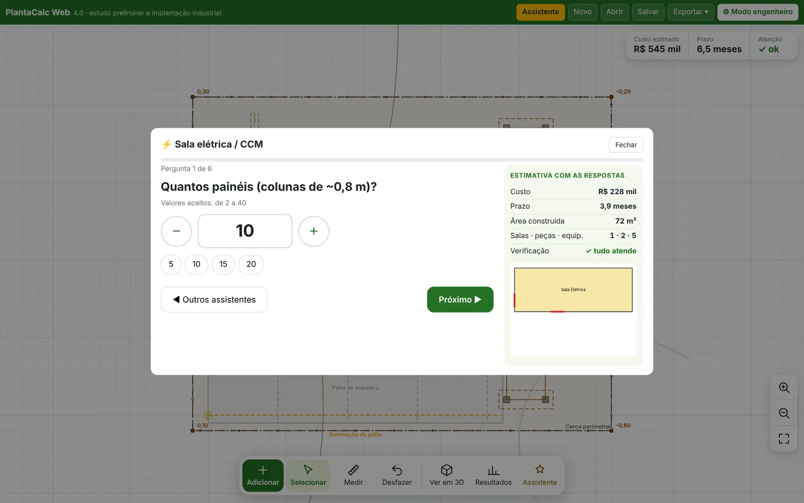
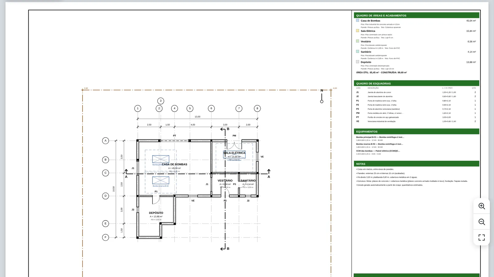
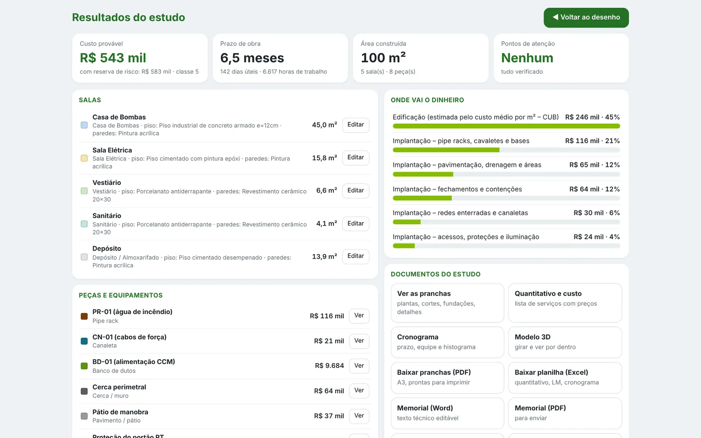
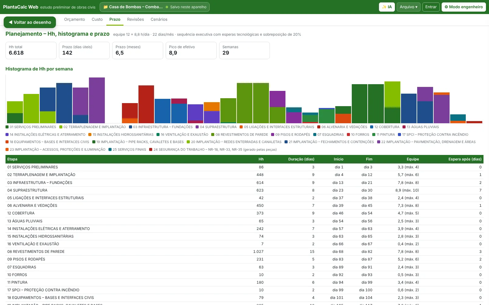
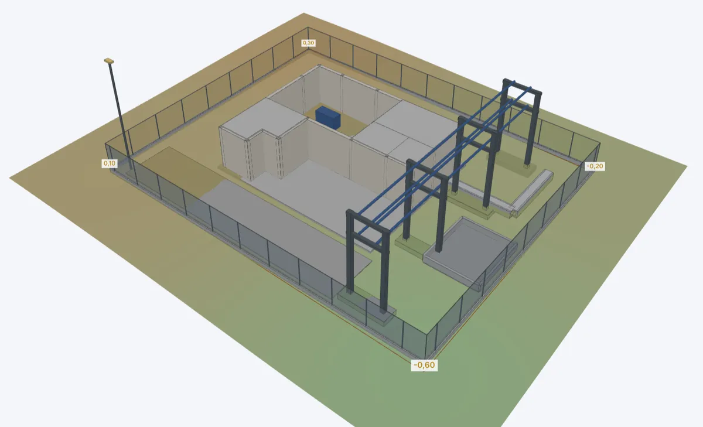
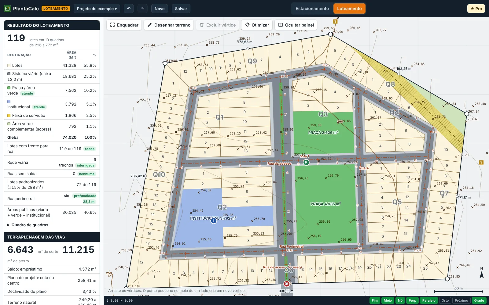
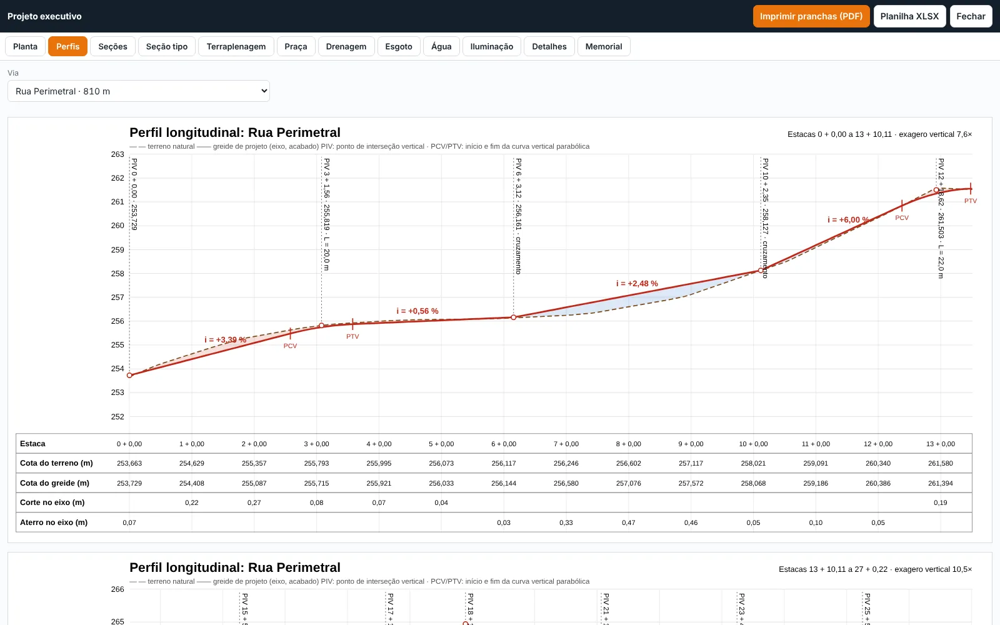
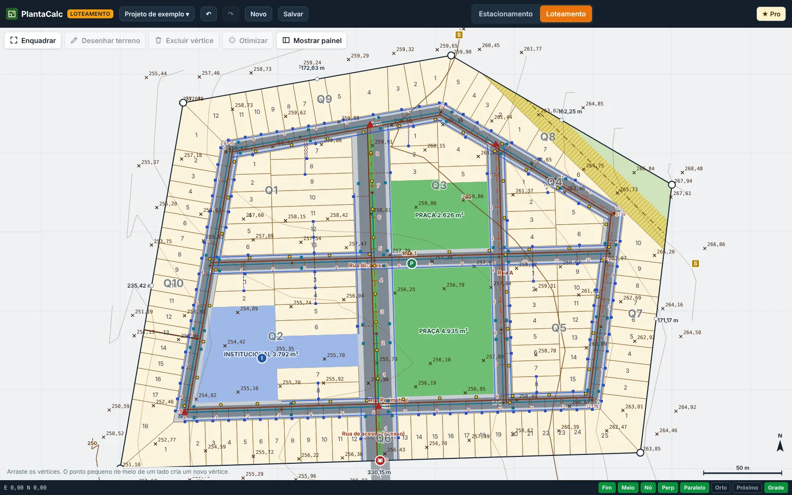
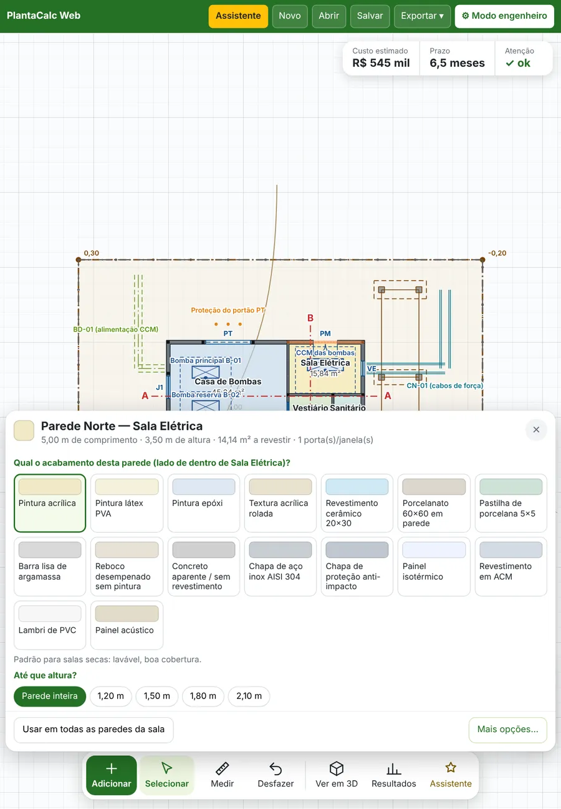

Do croqui ao orçamento. Da gleba ao loteamento.
Um só sistema para estudar edificações, áreas industriais, loteamentos e estacionamentos: pranchas, quantitativo, orçamento SINAPI, prazo, redes de infraestrutura e 3D.

Recursos
Tudo o que um estudo preliminar precisa, num só lugar.
Feito por engenheiro de obras industriais para quem precisa de número confiável cedo — antes do projeto executivo.
Responda perguntas. Receba o estudo dimensionado.
Os assistentes fazem uma pergunta por vez e já mostram custo, prazo e área enquanto você responde. No fim, conferem tudo antes de criar.
- Casa de bombas, sala elétrica/CCM, base de equipamento, galeria e canaleta, pátio e reforma/demolição
- Afastamentos da NR-10, portas abrindo no sentido da fuga, fundações e escoramento
- Avisa com antecedência quando um caso foge do comum

Pranchas técnicas que já saem cotadas.
Planta detalhada, estrutura, cortes, fachadas, fundações, quadros de pilares, armaduras e acabamentos, implantação e detalhes típicos — com carimbo, legenda e notas.
- PDF em A3 pronto para imprimir
- DXF para AutoCAD e IFC 4 para Revit e Navisworks
- Planta de fundo em PDF colocada na escala para desenhar por cima

Orçamento pelo SINAPI do seu estado.
Cada serviço do quantitativo recebe a composição SINAPI equivalente, com custo unitário, horas de mão de obra e memória de cálculo. Você revisa os vínculos e o PlantaCalc fecha o orçamento.
- Preços dos 27 estados, com e sem desoneração, publicados mês a mês
- BDI pela fórmula do Acórdão TCU 2.622/2013, com conferência das faixas e BDI diferenciado para fornecimento de materiais
- Curva ABC de serviços e de insumos e composições analíticas em PDF e Excel

Custo, prazo e riscos sem planilha paralela.
Quantitativo por serviço com preço, custo provável com reserva de risco, cronograma com equipe e histograma, e a lista do que precisa de atenção.
- “Onde vai o dinheiro” por etapa da obra
- Excel com quantitativo, lista de materiais por disciplina e memória de cálculo
- Memorial descritivo em Word, editável

Veja o conjunto em 3D antes de apresentar.
Terreno, edificação, pipe racks, canaletas, cercas e bases aparecem juntos. Gire, aproxime e exporte a imagem para a reunião.

Acabamento por parede
Toque na parede e escolha pintura, cerâmica, porcelanato, epóxi… com a altura da barra.
Planta de fundo na escala
Carregue um PDF ou foto, informe a escala ou meça uma cota conhecida e desenhe por cima.
Cronograma e histograma
Sequência das etapas, equipe por função e prazo em dias úteis.
Segurança do trabalho
Itens de NR-18, NR-33 e NR-35 entram sozinhos no quantitativo conforme a obra.
Vários projetos, salvos sozinhos
Cada alteração é salva automaticamente, com lixeira de 30 dias. Com uma conta, seu projeto abre no computador, no tablet e no celular; no Pro, quantos projetos você quiser e versões anteriores.
App Android
A mesma conta e os mesmos projetos no celular e no tablet Android, em tela cheia. Depois do primeiro acesso, abre mesmo sem internet.
Modo simples e modo engenheiro
Tela limpa para quem está começando; todos os parâmetros quando você precisar.
Módulo Loteamento
Da gleba ao projeto de loteamento e estacionamento.
Desenhe o terreno ou importe o levantamento topográfico, informe as dimensões mínimas e o PlantaCalc distribui lotes, ruas, praças e área institucional. Depois de aprovado, gera o projeto geométrico e as redes, com pranchas A3. Incluído no plano Pro.
Lotes com frente para rua e ruas interligadas.
Você define a área e a testada mínimas, a largura das ruas e os percentuais de áreas públicas. O sistema monta as quadras, deixa os lotes o mais iguais possível e incorpora as sobras aos vizinhos.
- Rua perimetral, avenida com canteiro e encaixe nas ruas existentes
- Nenhuma rua sem saída quando a gleba permite e quadro de áreas conferido automaticamente
- Estacionamentos com vagas, circulação e acessos no mesmo programa

Greide, perfis, seções e volumes.
A partir dos pontos do levantamento, o sistema monta o terreno, define o greide das vias com rampas e curvas verticais e calcula corte e aterro.
- Perfis longitudinais, seções transversais e seção tipo do pavimento
- Nota de serviço, volumes, diagrama de Brückner e projeto da praça
- Arraste um ponto ou um vértice e tudo é recalculado

Drenagem, água, esgoto, iluminação e energia.
Você marca os pontos de ligação com as concessionárias e o lançamento da drenagem; o sistema dimensiona as redes e liga cada lote.
- Drenagem com bocas de lobo, galerias e poços de visita no padrão do Caderno de Encargos SUDECAP
- Água pelos critérios da COPASA (T.104), esgoto pela NBR 9649 e ramais de cada lote
- Iluminação pública e rede aérea com postes, estruturas e transformadores pela CEMIG (ND-2.1 e ND-2.4)
- Valas, reaterro e pavimento pelos Cap. 3, 10 e 20 da SUDECAP, com memorial e planilha de quantitativos

Como funciona
Três passos, sem curso.
Comece com o assistente ou com um desenho rápido. Ajuste tocando no que quiser mudar.
Comece
Escolha um assistente, desenhe uma sala ou carregue a planta que você já tem.
Ajuste
Toque numa sala, parede ou peça: renomeie, troque o tipo, o piso, o revestimento e as medidas.
Entregue
Baixe as pranchas, a planilha, o memorial e o modelo 3D para levar à reunião.
No tablet também
Leve o estudo para a obra.
A tela se reorganiza no tablet em pé ou deitado. Botões grandes, cartões que abrem embaixo e o desenho sempre visível.
Abrir no meu aparelho
Planos
Grátis para usar. Pro para entregar.
Experimente de graça em um projeto, na tela. O Pro libera o quantitativo completo, a exportação dos arquivos e projetos ilimitados, sem anúncios, no PlantaCalc e no módulo Loteamento.
Gratuito
- Todos os assistentes e cálculos
- Pranchas, cronograma, memorial e 3D na tela
- Módulo Loteamento: traçado, greide e redes na tela
- Quantitativo parcial (metade da tabela) e só a faixa de custo
- 3 usos por mês do assistente de IA (só desenhar)
- 1 projeto
- Sem exportar arquivos (PDF, Excel, Word, DXF, IFC)
- Com anúncios
- Pranchas com marca d'água “versão gratuita”
Pro
- Tudo do Gratuito
- Quantitativo completo, curva ABC e análise de custo
- Orçamento pelo SINAPI do seu estado, com BDI do TCU e composições analíticas
- Exporta PDF, Excel, Word, DXF e IFC
- Módulo Loteamento completo: pranchas A3, planilhas, DXF e projetos ilimitados
- Projetos ilimitados, na nuvem e em qualquer aparelho
- Assistente de IA: desenha o croqui a partir de uma descrição e redige o escopo técnico
- Sem nenhum anúncio
- Pranchas e PDF sem marca d'água
- Cancele quando quiser, sem multa
Pagamento pelo Mercado Pago. Desistiu nos primeiros 7 dias? Devolvemos o valor integral (Código de Defesa do Consumidor, art. 49).
Dúvidas
Perguntas frequentes
Preciso instalar alguma coisa?
Não. O PlantaCalc abre no navegador (Chrome, Edge, Safari ou Firefox) do notebook, do tablet ou do celular.
O estudo substitui o projeto executivo?
Não. O PlantaCalc gera estudo preliminar: serve para estimar custo e prazo, comparar alternativas e apoiar a decisão. Obra exige projeto executivo com responsável técnico e ART.
Onde ficam os meus projetos?
No PlantaCalc, são salvos automaticamente no aparelho e na nuvem da sua conta, e abrem em qualquer computador, tablet ou celular. No módulo Loteamento, ficam salvos no navegador do aparelho; no Pro, você baixa o arquivo do projeto para guardar ou abrir em outro aparelho. O plano Gratuito permite 1 projeto em cada um; o Pro, quantos você quiser.
De onde vêm os preços?
Do SINAPI do estado que você escolher, com e sem desoneração, atualizado mês a mês (orçamento no plano Pro). No modo engenheiro você também pode ajustar preços unitários e índices para a sua região ou para a sua empresa.
Como funciona o pagamento do Pro?
A assinatura é feita pelo Mercado Pago, mensal ou anual, com renovação automática. Você cancela quando quiser em “Minha conta” e continua com o Pro até o fim do período pago.
Posso usar o plano Gratuito em trabalho profissional?
Sim. No Gratuito você faz todos os cálculos na tela, com anúncios, marca d'água “versão gratuita”, metade do quantitativo e 1 projeto; para baixar PDF, Excel, Word, DXF e IFC é preciso o Pro.
Quais normas o módulo Loteamento segue?
Água pela NBR 12218 e pela norma T.104 da COPASA, esgoto pela NBR 9649, iluminação pela NBR 5101, drenagem, valas e pavimento pelo Caderno de Encargos SUDECAP e rede aérea pelos manuais ND-2.1 e ND-2.4 da CEMIG. Os parâmetros (lote mínimo, larguras, áreas públicas, chuva de projeto) são editáveis para seguir a lei e os padrões do seu município. O resultado é estudo preliminar: o projeto executivo e a aprovação nos órgãos e nas concessionárias continuam com o responsável técnico.
Faça o seu primeiro estudo agora.
Crie sua conta grátis e faça o estudo em menos de 15 minutos.
Abrir o PlantaCalc